OREO Digital Contents
About
2019년 이전까지 그래픽 위주였던 SNS 콘텐츠가 점점 포토 비주얼 중심으로 옮겨 가던 시기에, 오레오의 SNS 디지털 콘텐츠를 맡았습니다.
제작물에서 사진의 비중이 크게 높아지면서 스타일링, 조명, 촬영, 보정까지 직접 다뤘고, 각 플레이버의 특성에 맞춰 기획부터 최종 제작까지 참여했습니다.
여러 플레이버를 각각 강조하다 보면 피드가 통일감 없이 흐트러질 수 있어, 콘텐츠마다 비슷한 톤앤매너를 유지하는 데 신경 썼습니다.
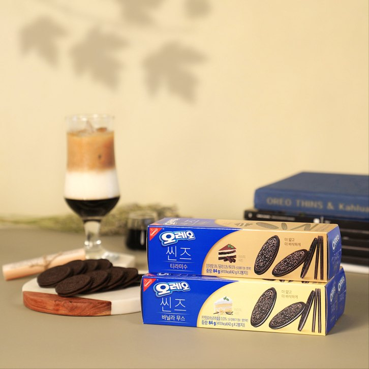
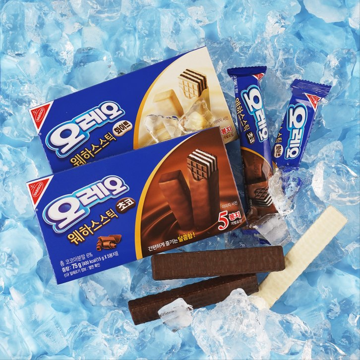
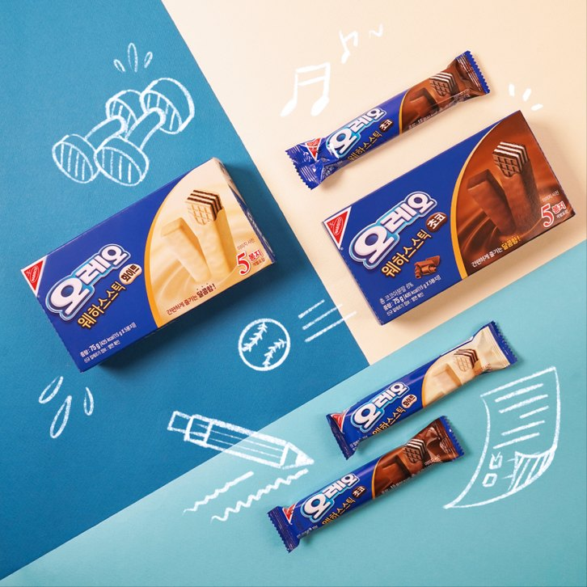
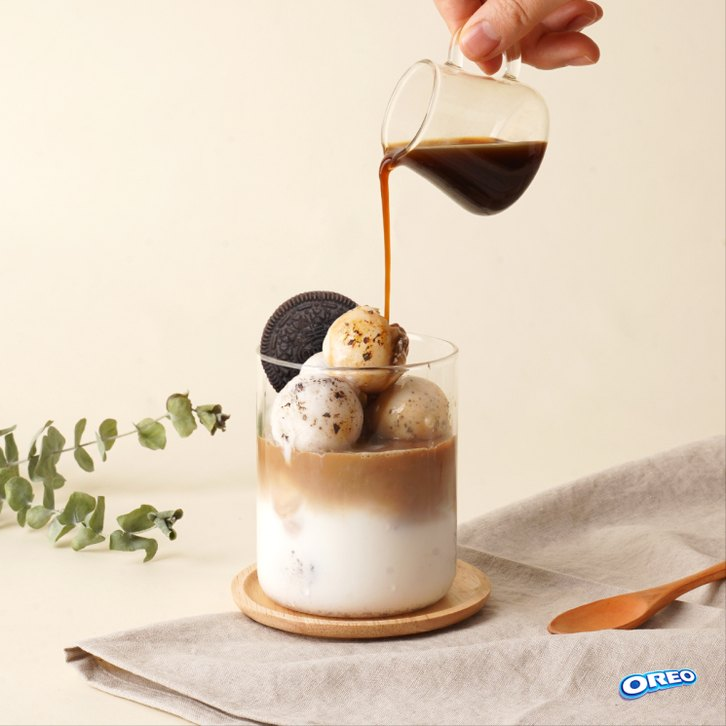
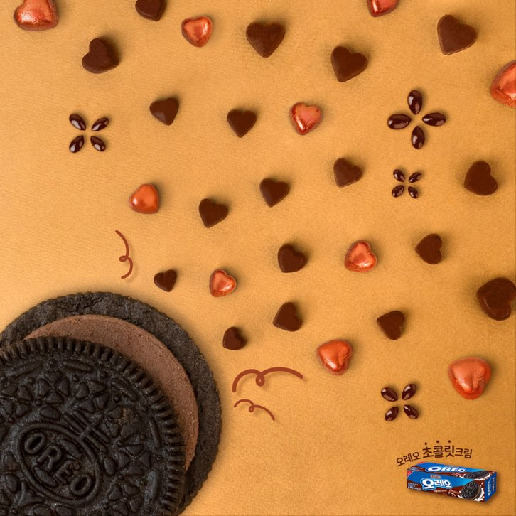
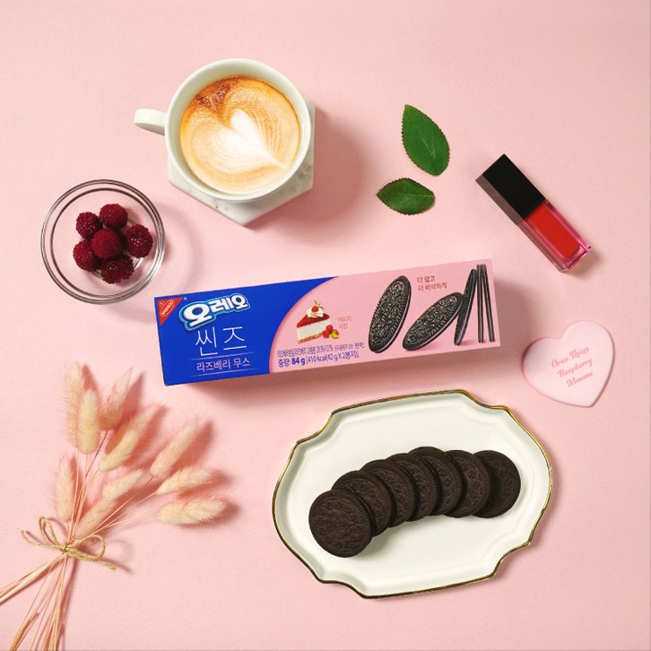
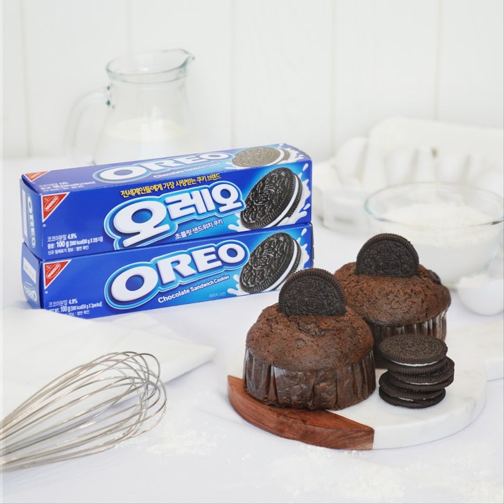
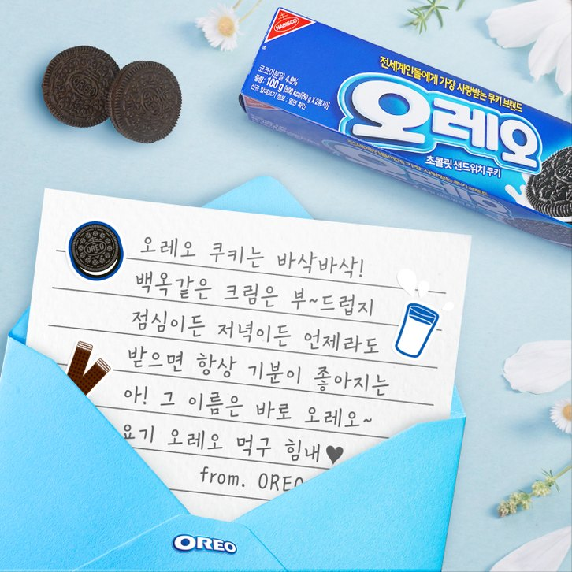
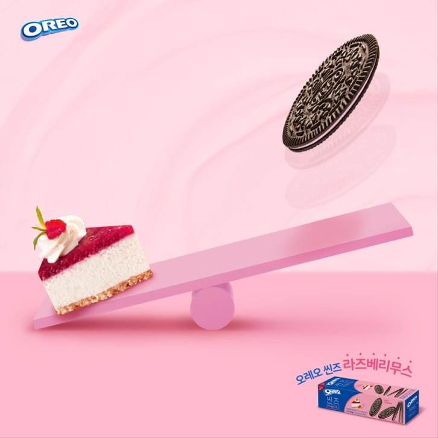
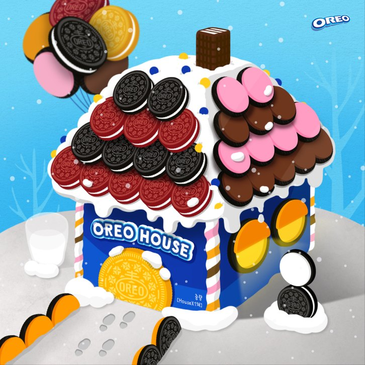
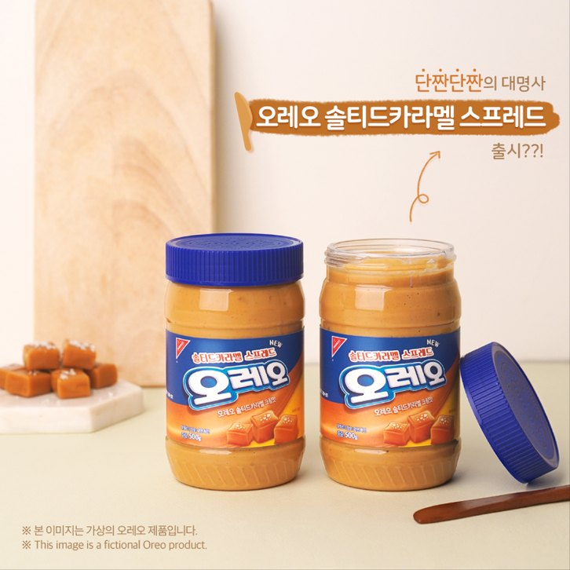
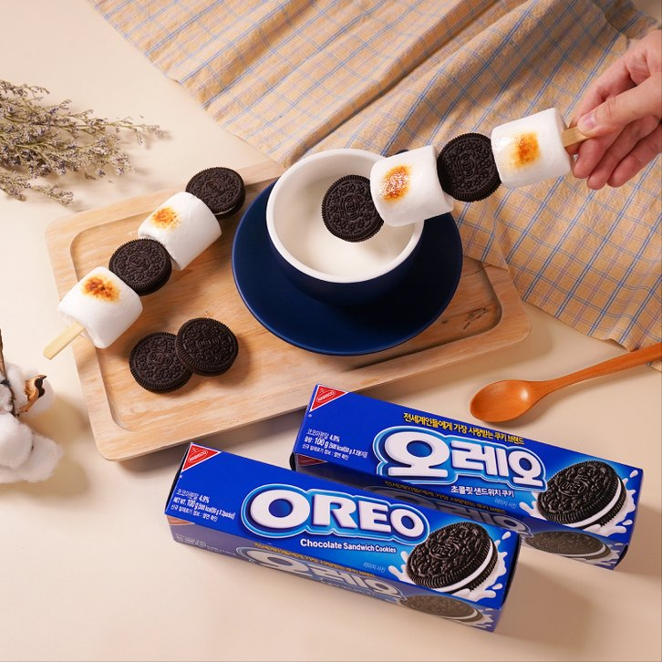